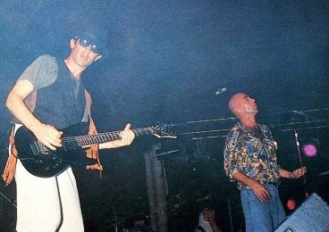

Un chancho puede comer un jamón
Publicado el 27 de mayo, 2025
Hoy se cumplen 30 años de la presentación de La mosca y la sopa, el álbum más categórico y a su vez más polémico dentro la liturgia de Los Redondos, el de la interpretación casi posible y el dispar

—Somos, por el momento, nuestros únicos testigos… y es bastante.
1991 amaneció nublado para Los Redondos. Los fuegos de Oktubre se habían disipado y la banda del under venía de reventar Obras. Llenar el templo de la confirmación musical y afirmarse como un fenómeno de masas era, en sí mismo, un elogio hiperbólico, pero algunos puristas encontraban en esos recitales la transmutación de Patricio Rey como una referencia comercial. De fondo se imponía la realidad e indicaba que Cemento y sus satélites empezaban a quedar chicos, y más temprano que tarde el colectivo entendió por dónde venía la mano y peregrinó con el grupo, pero de repente sobrevino el caos: la muerte de Walter Bulacio estalló en la televisión y Los Redondos quedaron apuntados, por primera vez, por la supuesta violencia de sus recitales.
La mosca y la sopa se publicó el 27 de octubre de 1991, y fue el estruendo que rompió con meses de hermetismo. Los Redondos pasaron semanas en los estudios Del Cielito y parieron un disco –el primero, además, editado en CD- con letras antológicas, bañadas de crítica social, con muy buena música y abusiva actualidad. Un poco de amor francés, Mi perro Dinamita, El pibe de los astilleros y Toxi-taxi (una gran vidriera para el Motín de los Colchones) quedaron en el recuerdo por su repetición en loop, pero el buque insignia y el tema que mejor resumía aquel trabajo era, posiblemente, Queso ruso, la canción más larga después de la oscurísima Salando las heridas y un minucioso repaso, como se dijo alguna vez, “pronunciado a la velocidad nerviosa de un siglo en fuga”. El barrido de Estados Unidos en la Guerra del Golfo, el electro de Elvis, la caída del Muro de Berlín con el colapso soviético hociqueando la puerta y el riff que cierra el disco con una amenaza sobre la difusa superpotencia que ya está por venir, todo pasa por ese corte. La estampida es un hecho y la consigna, de qué lado de la mecha te encontrás, es subterránea pero omnipresente.
El arte de Rocambole va en consonancia con el carácter colectivo del disco, y fuera de la tapa minimalista el álbum interior es una foto de un collage con un gato real momificado que el artista encontró en el techo de su casa. Nuevamente aparece la referencia a Cerdos y Peces y a los jubilados de Plaza Lavalle, un guiño a la causa de Norma Plá, en auge en esos días. En suma, tal vez no se trate de fracasar en el trillado intento de analizar la lírica de Los Redondos sino interpretar que La mosca y la sopa es, en cierto punto, el trabajo más terrenal en su temática y más claro en cuanto había mucho que decir en ese momento, amparado además en una melodía histérica acompañada por la voz rasposa del Indio y la omnisciente guitarra de Skay. El resultado es un disco contracultural que rompió todo en las radios, una decena de canciones frenéticas sin desperdicio, y una excelente versión de ingreso para el público mayoritario.
El éxito del álbum generó, no obstante, ciertos resquemores en los seguidores más celosos, quienes se enfrentaron con los fallidos exégetas. En el aire quedó flotando eso de que La mosca y la sopa era el disco favorito de aquellos a los que no les gustaban Los Redondos, pero también coincidió con una época de mucha exposición del grupo, con el primer trabajo de los noventa y con una nueva etapa que se inició con recitales en estadios de fútbol y, tras los disturbios en Huracán en diciembre de 1994, con la despedida de Capital Federal y un largo peregrinaje por el interior del país. A trasluz de los años es muy borroso discernir el impacto real que tuvieron esas canciones en la generación post-Cemento que se plegó a la banda, pero de mínima fueron grandes estandartes para un fenómeno que ya llevaba tiempo carreteando.
La mosca y la sopa fue, de cualquier modo, un mojón fundacional en la popularidad de Los Redondos y en la entronización de la liturgia ricotera, abonada por sus misas populares para fieles de dioses paganos, como también una consecuencia directa del viraje del Indio hacia un secretismo propio de un Salinger moderno, mitad genio, mitad fóbico, obstinado en demostrar que ciertos fuegos no se encienden frotando dos palitos.